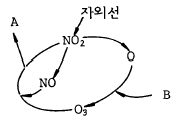
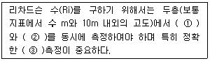
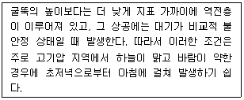
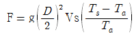
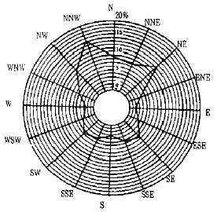
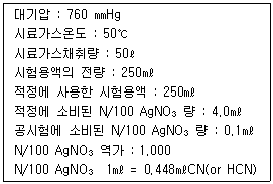
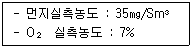
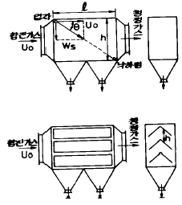

대기환경산업기사 (2004-03-07 기출문제)
1과목: 대기오염개론
1. 비행기가 초음속으로 고공비행을 할 때 대기에 어떤 영향을 주는가?
- Ozone층의 파괴와 CO2의 증가
- Mesosphere의 파괴와 NO2의 증가
- 대류권의 파괴와 CO2의 증가
- 지표대기층의 파괴와 NO2의 증가
(정답률: 알수없음)

2. 다음 그림은 탄화수소가 존재하지 않는 경우, NO2의 광화학싸이클(Photolytic cycle)을 설명한 것이다. 그림의 A 및 B 에 해당되는 물질은?

- A = O2, B = O2
- A = O2, B = NO
- A = O2, B = NO2
- A = O2, B = CO2
(정답률: 알수없음)
3. 다음은 대기의 동적 안정도를 나타내는 '리차드슨 수'에 관한 설명이다. ( )안에 알맞는 내용은?

- ① 기압 - ② 기온 - ③ 기압
- ① 기압 - ② 기온 - ③ 기온
- ① 기온 - ② 풍속 - ③ 풍속
- ① 기온 - ② 풍속 - ③ 기온
(정답률: 알수없음)
4. 대기중의 질소산화물이 광화학반응을 하여 Los Angeles형 스모그를 형성할 때 탄화수소가 촉매역할을 하는데 어떤 종류의 탄화수소가 가장 유효한가?
- Acetylene계 HC
- Paraffin계 HC
- Olefin계 HC
- 방향족 HC
(정답률: 알수없음)
5. 실내 공기 오염의 지표가 되는 것은?
- SO2
- NOx
- CO2
- CO
(정답률: 알수없음)
6. 오염원 영향평가 방법중 분산모델에 관한 설명으로 알맞지 않은 것은?
- 미래의 대기질을 예측할 수 있다.
- 수용체 입장에서 영향평가가 현실적이다.
- 오염물의 단기간 분석시 문제가 된다.
- 지형 및 오염원의 조업조건에 영향을 받는다.
(정답률: 알수없음)
7. 다음이 설명하는 굴뚝 연기 형태는?

- 환상형
- 원추형
- 훈증형
- 상승형
(정답률: 알수없음)
8. 굴뚝 직경이 2m, 배출속도가 5m/sec, 배출온도 400K, 대기온도 300K, 풍속 3m/sec 일 때 Δ h(m)는 얼마인가?(단, 사용공식

, Δ h = 114CF1/3 / u, C = 1.58 )- 142.58
- 152.32
- 168.47
- 198.23
(정답률: 알수없음)
9. 다음의 고도층 중 바람의 Wind Shear가 가장 큰 고도는?
- 0∼50m
- 50∼100m
- 100∼500m
- 500∼1000m
(정답률: 알수없음)
10. 체적이 100m3인 복사실의 공간에서 오존(O3)의 배출량이 분당 0.2mg인 복사기를 연속 사용하고 있다. 복사기 사용전의 실내 오존의 농도가 0.1ppm라고 할 때 5시간 사용후 오존농도는 몇 ppb인가? (단, 0℃, 1기압 기준, 환기없음)
- 260
- 380
- 420
- 520
(정답률: 알수없음)
11. 다음의 기온역전 중 '공중역전'과 가장 거리가 먼 것은?
- 침강역전
- 난류역전
- 해풍역전
- 이류형역전
(정답률: 알수없음)
12. 길이를 나타내는 단위로써 1Å(angstrom)은 몇 ㎝인가?
- 10-5 ㎝
- 10-6 ㎝
- 10-8 ㎝
- 10-9 ㎝
(정답률: 알수없음)
13. 다음 그림은 16등급으로 구분된 오산지역의 풍향별 발생 빈도를 나타낸 것으로써 가장 발생빈도가 높게 나타난 풍향은?

- 남남동풍
- 북북서풍
- 남동풍
- 서남풍
(정답률: 알수없음)
14. 대기오염물질과 발생원의 연결이 틀린 것은?
- 아황산가스 - 중유와 석탄 등 화석연료사용 공장
- 질소산화물 - 내연기관, 폭약, 비료제조
- 암모니아 - 소오다공업, 금속정련, 합성수지제조업
- 시안화수소 - 가스제조업, 화학공업, 제철공업
(정답률: 알수없음)
15. 공기가 단열적으로 상승하면 온도가 낮아지게 된다. 100m당 약 1℃씩 감소되는 비율(대기가 건조한 경우)을 무엇이라 하는가?
- 환경온위감율
- 건조단열감율
- 환경단열감율
- 대기단열감율
(정답률: 알수없음)
16. 다음 PAN의 광화학 smog 형성과정이 바르게 된 것은?
- CH3COOO + NO2 → CH3COOONO2
- C6H5COOO + NO2 → C6H5COOONO2
- RCOO + O2 → RO2· + CO2
- RO· + NO2 → RONO2
(정답률: 알수없음)
17. 프로판(C3H8)가스 120kg가 기화될 때 그 용적(Nm3)은?
- 30.2 Nm3
- 61.1 Nm3
- 90.2 Nm3
- 120.2 Nm3
(정답률: 알수없음)
18. 스토크(Stokes)법칙에 적용되어지는 입자의 침강속도(종말속도)와 관련이 없는 항은?
- 입자 밀도
- 침강 길이
- 유체 점도
- 입자 직경
(정답률: 알수없음)
19. 오존층 보호를 위한 국제협약은?
- 바젤 협약
- 비엔나 협약
- 기후변화 협약
- 리우 협약
(정답률: 알수없음)
20. 아황산가스를 0.25%(V/V) 포함한 발생량이 450m3/min인 매연이 년간을 통하여 30%(부피기준)가 같은 방향으로 유출되어 이 지역의 식물의 생육에 피해를 주었다. 향후 10년 동안, 이 지역에 피해를 줄 아황산가스의 총량은? (단, 표준상태 기준 )
- 3,462톤
- 4,535톤
- 5,068톤
- 8,562톤
(정답률: 알수없음)
2과목: 대기오염 공정시험 기준(방법)
21. 대기오염공정시험방법에서 환경대기중 탄화수소 측정방법으로 규정되지 않은 것은?
- 총탄화수소 측정법
- 램프식 탄화수소 측정법
- 비메탄 탄화수소 측정법
- 활성 탄화수소 측정법
(정답률: 알수없음)
22. 황화수소를 요오드적정법으로 정량 할 때 종말점의 판단을 위한 지시약은?
- 녹말 용액
- 염화제이철
- 아르세나조Ⅲ
- 메틸렌 블루
(정답률: 알수없음)
23. 다음의 오염물질과 측정법으로 관계가 없는 것은?
- 암모니아-인도페놀법
- 포름알데히드-크로모트로핀산법
- 황화수소-메틸렌블루우법
- 황산화물-페놀디설폰산법
(정답률: 알수없음)
24. 배출가스시료를 채취하여 질산은 적정법으로 시안화수소를 측정하기 위하여 다음과 같은 측정치를 얻었다. 시안화수소의 농도는?

- 41ppm
- 48ppm
- 56ppm
- 59ppm
(정답률: 28%)
25. '이온크로마토그래프법'의 장치 구성순서로 가장 알맞는 것은?
- 용리액조-펌프-써프렛서-시료주입장치-분리관-검출기
- 펌프-시료주입장치-용리액조-써프렛서-분리관-검출기
- 용리액조-펌프-시료주입장치-분리관-써프렛서-검출기
- 펌프-시료주입장치-써프렛서-분리관-용리액조-검출기
(정답률: 알수없음)
26. 배출가스중 염화수소 측정법만으로 짝지은 것은?
- 아미노안티피린법 - 침전적정법
- 차아염소산염법 - 중화적정법
- 인도페놀법 - 중화적정법
- 티오시안산제이수은법 - 질산은법
(정답률: 알수없음)
27. 원자흡광도 분석장치중 광원부에 가장 일반적으로 쓰이는 램프는?
- 열음극선램프
- 중수소방전램프
- 텅스텐램프
- 중공음극램프
(정답률: 알수없음)
28. 배출가스를 시료채취할 때, 흡수액으로 수산화나트륨용액을 사용하지 않는 분석대상 가스는?
- 염화수소
- 황산화물
- 불소화합물
- 시안화수소
(정답률: 알수없음)
29. 굴뚝에서 배출되는 먼지측정시 굴뚝의 지름이 2.5m의 원형 굴뚝의 측정점수는?
- 6
- 9
- 12
- 15
(정답률: 알수없음)
30. 흡광광도법에 관한 설명이다. 틀리는 것은? (단, 아래의 기호는 Io : 입사광의 강도, It : 투사광의 강도, C :용액의 농도, ℓ : 빛의 투과길이 ε : 비례상수(흡광계수)를 뜻한다.)
- 흡광광도법은 램버어트 비어의 법칙을 응용한 것이다.
- It / Io 를 투과도(t)라 한다.
- 투과도(t)를 백분율로 표시한 것을 투과 퍼센트라 한다.
- 투과도(t)의 상용대수를 흡광도라 한다.
(정답률: 알수없음)
31. 10 w/v % 용액에 대한 설명으로 알맞는 것은?
- 용질 10mL를 물에 녹여 100mL로 한 것이다.
- 용질 10g을 물 90mL에 녹인 것이다.
- 용질 10g을 물에 녹여 100mL로 한 것이다.
- 용질 10g을 물 또는 알콜에 녹여 110mL로 한 것이다.
(정답률: 알수없음)
32. 환경대기중의 먼지측정방법중 부유하고 있는 입자상 물질을 일정시간 여과지상에 포집한 후 빛을 조사하여 빛의 두 파장을 측정하고, 그 값으로부터 입자상 물질의 농도를 구하는 방법은?
- 광투과법
- 광산란법
- 비적외선조사법
- 자외선조사법
(정답률: 알수없음)
33. 다음중 굴뚝 단면이 상· 하 동일 단면적인 사각형 굴뚝의 직경 산출방법으로 옳은 것은?
- 환산직경 = 2×{(가로×세로) ÷ (가로+세로)}
- 환산직경 = 3×{(가로×세로) ÷ (가로+세로)}
- 환산직경 = 4×{(가로×세로) ÷ (가로+세로)}
- 환산직경 = 5×{(가로×세로) ÷ (가로+세로)}
(정답률: 알수없음)
34. 굴뚝 배출가스 중의 일산화탄소측정방법과 가장 거리가 먼 것은?
- 비분산적외선 분석법
- 정전위 전해법
- 이온 전극법
- 가스크로마토그래프법
(정답률: 알수없음)
35. 링겔만 농도표로 매연을 측정할 때 굴뚝의 매연을 측정자의 얼마 만한 높이와 어떤 각도에서 관측 비교하는가?
- 측정자의 눈보다 20cm 높이, 30°각도가 되게 관측한다.
- 측정자의 눈보다 30cm 높이, 45°각도가 되게 관측한다.
- 측정자의 눈보다 40cm 높이, 60°각도가 되게 관측한다.
- 측정자의 눈높이의 수직이 되게하여 관측한다.
(정답률: 알수없음)
36. 입자상 비소의 분석법에서 일반적으로 시료채취장치인 채취관, 도관의 재질로 사용하지 않는 것은?
- 불소수지
- 석영
- 염화비닐수지
- 보통강철
(정답률: 알수없음)
37. B-C유를 사용하는 보일러의 먼지 배출허용기준이 40(4)㎎/Sm3인 배출시설에서의 측정결과가 다음과 같았다. 표준산소농도로 보정한 먼지의 농도는?

- 20.5㎎/Sm3
- 34.8㎎/Sm3
- 42.5㎎/Sm3
- 49.5㎎/Sm3
(정답률: 알수없음)
38. 환경대기중의 옥시단트 측정에 대한 설명중 틀린 것은?
- 측정방법으로 자외선 광도법, 화학발광법 등이 있다.
- 전옥시단트란 중성요오드화 칼륨용액에 의해 요오드를 유리시키는 물질이다.
- 화학발광법은 시료대기중의 오존과 황화수소가스가 반응할때 생기는 발광도가 오존의 농도와 비례하는 것을 이용하여 측정한다.
- 중성요오드화 칼륨법(수동)은 대기중에 존재하는 오존과 다른 옥시단트를 포함하는 저농도의 전체 옥시단트를 측정한다.
(정답률: 알수없음)
39. 흡광광도법에서 자동기록식 광전분광광도계의 파장교정에 이용되는 것은?
- 중크롬산칼륨용액의 흡광도
- 간섭필터의 흡광도
- 커트필터의 미광
- 홀뮴유리의 흡수스펙트럼
(정답률: 알수없음)
40. 시험의 기재 및 용어 설명 중 맞지 않는 것은?
- "정확히 단다"라 함은 규정한 양의 검체를 취하여 분석용 저울로 0.1㎎까지 정량한 것
- 액체성분의 양을 정확히 취할때는 홀피펫, 메스플라스크 또는 이와 동등이상의 정확도를 갖는 용량계 사용
- 시험조작중"즉시"란 10초이내 표시된 조작을 하는 것
- "감압" 또는"진공"이라 함은 따로 규정이 없는 한15㎜Hg 이하를 뜻함
(정답률: 알수없음)
3과목: 대기오염방지기술
41. 가스의 후드 유입계수가 0.77, 속도압이 20㎜H2O일 때 후드의 압력손실(㎜H20)은?
- 약 14
- 약 18
- 약 23
- 약 27
(정답률: 알수없음)
42. Cyclone의 운전중 압력손실이 감소하고 집진율이 저하되는 원인으로 가장 거리가 먼 것은?
- VANE의 마모
- 공기가 새어 들어오기 때문
- 마찰 또는 부식에 의해서 구멍이 뚫렸기 때문
- 더스트의 부착
(정답률: 알수없음)
43. 흡수장치에 사용되는 흡수액의 구비요건에 관한 설명으로 틀린 것은?
- 용해도가 높아야 한다.
- 휘발성이 커야 한다.
- 점성이 비교적 작아야 한다.
- 부식성 및 독성이 없어야 한다.
(정답률: 알수없음)
44. 회전식 세정집진장치에 공급되는 세정액은 송풍기 회전에 의하여 미립자로 만들어지는데 이때 물방울 직경을 250㎛로 만들기 위한 직경 6cm 회전판의 rpm은?
- 3,270
- 3,850
- 4,280
- 4,620
(정답률: 알수없음)
45. 황화수소(H2S) 1.0 Sm3를 완전연소할 때 소요되는 이론 연소공기량은?
- 약 2.4 Sm3
- 약 7.1 Sm3
- 약 9.6 Sm3
- 약 12.3 Sm3
(정답률: 알수없음)
46. 세정식 집진장치에 관한 설명이다. 틀린 것은?
- 고온가스 및 연소성, 폭발성 가스의 처리가 가능하다.
- 가스흡수, 증습등의 조작이 가능하다.
- 소수성 더스트의 집진효과는 높다.
- 가동부분이 작고 조작이 간단하다.
(정답률: 알수없음)
47. 입자에 작용하는 종말 침강 속도(terminal settling velocity) 계산시 관계되는 힘과 가장 거리가 먼 것은?
- 항력
- 관성력
- 부력
- 중력
(정답률: 알수없음)
48. 그림은 집진장치의 개략을 나타낸것이다. 어느 집진장치의 구조를 나타낸 것인가?

- 관성력 집진장치
- 원심력 집진장치
- 여과 집진장치
- 중력 집진장치
(정답률: 알수없음)
49. 고체 먼지를 함유한 배기가스를 처리하는 전기집진장치의 집진기전과 가장 거리가 먼 것은?
- 이온화
- 산화
- 이동
- 대전(charging)
(정답률: 알수없음)
50. 세정 집진장치의 입자포집 원리에 관한 다음 내용중 옳지 않은 것은?
- 미립자 확산에 의하여 액적과의 접촉을 쉽게한다.
- 배기의 습도 감소에 의하여 입자가 서로 응집한다.
- 입자를 핵으로 한 증기의 응결에 따라 응집성을 촉진시킨다.
- 액적에 입자가 충돌하여 부착한다.
(정답률: 알수없음)
51. 수소 12.5%, 수분 0.3%인 중유의 고발열량이 10,500kcal/kg 이다. 이 중유의 저발열량은? (단, 수증기의 증기잠열은 600kcal/kg)
- 9,823kcal/kg
- 9,535kcal/kg
- 9,300kcal/kg
- 9,018kcal/kg
(정답률: 알수없음)
52. 먼지 농도가 10g/Sm3인 매연을 집진율 80%인 집진장치로 1차 처리하고 다시 2차 집진장치로 처리한 결과 배출가스중 먼지 농도가 0.2g/Sm3 이 되었다. 이때 2차 집진장치의 집진율은?
- 70%
- 80%
- 85%
- 90%
(정답률: 알수없음)
53. 전기집진기의 집진율 향상에 관한 설명으로 알맞는 것은?
- 암모니아를 주입하면 분진의 비저항값은 낮아진다.
- 분진의 비저항이 104~1010Ω cm의 범위내에서는 재비산 현상이 발생한다.
- 비저항이 낮은 분진의 경우 물이나 황산등을 첨가할 수 있다.
- 분진의 비저항이 높을 경우 탈진의 타격빈도를 높인다.
(정답률: 알수없음)
54. 탄소 85%, 수소 13%, 황 2% 인 중유를 공기비 1.4 로 연소 시킬 때 건 연소 가스중의 SO2 부피분율(%)은?
- 약 0.09
- 약 0.18
- 약 0.21
- 약 0.32
(정답률: 알수없음)
55. 반지름 220mm, 유효길이 3m인 원통형 filter bag을 사용하여 농도 6g/m3인 배출가스를 20m3/sec로 처리하고자 한다 겉보기 여과속도를 12cm/sec로 할때 filter bag의 필요한 수는?
- 41개
- 54개
- 75개
- 96개
(정답률: 알수없음)
56. 중력집진장치의 효율향상 조건이라 볼 수 없는 것은?
- 침강실 처리가스 속도를 작게 한다.
- 침강실내의 배기기류를 균일하게 한다.
- 침강실의 높이는 작고, 길이는 길게 한다.
- 침강실의 BLOW DOWN효과를 이용하여 난류현상을 억제한다.
(정답률: 알수없음)
57. 전기집진기에서 집진극과 방전극의 간격 4cm, 가스유속2.4m/sec로서 먼지 입자를 100% 제거하기 위해 요구되는 이론적인 전기집진극의 길이는? (단, 입자의 집진극으로 표류(분리)속도는 0.06m/sec임)
- 0.8m
- 1.6m
- 2.0m
- 2.4m
(정답률: 알수없음)
58. 배연중의 황산화물을 촉매를 이용하여 농도 약 80%의 황산을 직접 회수할 수 있는 방법은?
- 접촉산화법
- 흡착법
- 건식흡수법
- 습식흡수법
(정답률: 알수없음)
59. 처리가스량 36,000Sm3/hr, 압력손실이 200mmH2O, 송풍기 효율 70%, 여유율 1.2일 때 송풍기의 소요동력은?
- 19.5KW
- 24.7KW
- 29.3KW
- 33.6KW
(정답률: 알수없음)
60. 탄화수소비 (C/H)에 관한 설명 중 틀린 것은?
- 중질 연료일수록 C/H비는 크다.
- C/H비가 클수록 이론 공연비는 감소된다.
- C/H비는 휘발유 ＞ 등유 ＞ 경유 ＞ 중유 순으로 감소한다.
- C/H비가 클수록 휘도가 높고 방사율이 크다.
(정답률: 알수없음)
4과목: 대기환경 관계 법규
61. 비산먼지 발생사업과 관련 없는 사업장은?
- 종이제품제조업
- 제1차 금속제조업
- 건설업
- 운송장비제조업
(정답률: 알수없음)
62. 다음 중 용어의 정의가 잘못된 것은?
- '매연'이라 함은 연소시에 발생하는 유리탄소를 주로 하는 미세한 입자상 물질을 말한다.
- '검댕'이라 함은 연소시에 발생하는 유리탄소가 응결하여 입자의 지름이 1미크론 이상의 입자상물질이다.
- '가스'라 함은 물질의 연소,합성,분해시에 발생하거나 화학적 성질에 의하여 발생하는 기체상물질이다.
- '첨가제'라 함은 탄소와 수소만으로 구성된 물질을 제외한 화학물질로서 자동차의 연료에 소량을 첨가함으로서 자동차의 성능을 향상시키거나 자동차 배출물질을 저감시키는 화학물질이다.
(정답률: 알수없음)
63. 위임업무의 보고사항 중 '배출부과금 징수실적 및 체납처분현황'의 보고기일로 알맞는 것은?
- 다음달 10일까지
- 매분기 종류후 15일 이내
- 매반기 종류후 15일 이내
- 다음 연도 1월 15일까지
(정답률: 알수없음)
64. 환경부장관은 부과금 및 가산금의 징수업무를 시,도지사에게 위임한 경우 시,도지사에게 부과금 및 가산금의 얼마만큼의 액수를 징수비용으로 교부하여야 하는가?
- 100분의 5
- 100분의 7
- 100분의 10
- 100분의 15
(정답률: 알수없음)
65. 대기의 오염도검사를 할 수 있는 기관과 거리가 먼 것은?
- 유역환경청
- 특별시· 광역시· 도의 보건환경연구원
- 환경보전협회
- 환경관리공단
(정답률: 알수없음)
66. 과징금은 조업정지일수에 1일당 부과금액과 사업장 규모별 부과계수를 곱하여 산정한다. 5종 사업장의 부과계수로 적절한 것은?
- 1.4
- 1.2
- 0.8
- 0.4
(정답률: 알수없음)
67. 대기환경보전법상 환경관리인의 교육기관 및 교육기간 기준으로 적절한 것은? (단, 정보통신매체 원격교육이 아님)
- 환경공무원교육원 - 5일 이내
- 환경공무원교육원 - 3일 이내
- 환경보전협회 - 5일 이내
- 환경보전협회 - 3일 이내
(정답률: 알수없음)
68. 법적으로 규정된 기후, 생태계변화 유발물질과 가장 거리가 먼 것은?
- 아산화질소
- 수소불화탄소
- 사염화탄소
- 과불화탄소
(정답률: 알수없음)
69. 대기환경 규제지역의 지정에 따라 시,도지사가 수립하는 실천계획에 포함되어야 할 사항과 거리가 먼 것은?
- 일반환경현황
- 대기환경영향평가를 통한 대기오염도 분석
- 계획 달성년도의 대기질 예측
- 대기보전을 위한 투자계획과 오염물질 저감효과를 고려한 경제성 평가
(정답률: 알수없음)
70. 사업자는 배출시설 및 방지시설에 대하여 시설가동시간, 오염물질 배출량등을 기록한 운영일지를 최종기재한 날부터 몇 년간 보존해야 하는가?
- 4년
- 3년
- 2년
- 1년
(정답률: 50%)
71. 경유를 사용하는 자동차의 배출가스 종류와 가장 거리가 먼 것은? (단, 대통령령이 정하는 오염물질 기준 )
- 알데히드
- 매연
- 입자상물질
- 질소산화물
(정답률: 알수없음)
72. 개선명령을 받은 자가 부득이하다고 인정되는 사유로 개선명령 받은 기간내에 조치를 완료할 수 없는 경우, 환경부장관에게 개선연장 신청할 수 있는 최대 기간은?
- 6개월
- 1년
- 1년 6개월
- 2년
(정답률: 알수없음)
73. 다음 연간평균치 대기환경기준 중 틀린 것은?
- 아황산가스 0.15ppm 이하
- 이산화질소 0.⑤ppm 이하
- 총먼지 150㎍/m3 이하
- 미세먼지(PM-10) 70㎍/m3 이하
(정답률: 알수없음)
74. 악취측정 방법중 기기분석법에 규정된 악취 물질이 아닌것은?
- 메틸메르캅탄
- 황화수소
- 황화메틸
- 이황화탄소
(정답률: 알수없음)
75. 조업정지처분에 갈음하여 부과할 수 있는 과징금의 최대 금액은?
- 1억원
- 2억원
- 3억원
- 5억원
(정답률: 알수없음)
76. 환경관리인의 업무를 방해하거나 환경관리인의 요청을 정당한 사유없이 거부한 자에 대한 벌칙기준으로 적절한 것은?
- 100만원이하의 벌금에 처한다
- 200만원이하의 벌금에 처한다
- 6월이하의 징역 또는 300만원이하의 벌금에 처한다
- 1년이하의 징역 또는 500만원이하의 벌금에 처한다
(정답률: 알수없음)
77. 다음은 배출부과금중 처리부과금의 위반횟수별 부과계수를 나타낸 것이다. 옳은 것은?
- 처음위반 (110/100), 다음위반 (1⑤/100) × (110/100)
- 처음위반 (110/100), 다음위반 (110/100) × (110/100)
- 처음위반 (1⑤/100), 다음위반 (1⑤/100) × (110/100)
- 처음위반 (1⑤/100), 다음위반 (1⑤/100) × (1⑤/100)
(정답률: 알수없음)
78. 대기오염물질 배출시설(공통시설)기준에 관한 내용 중 틀린 것은?
- 포장능력이 시간당 100kg 이상의 고체입자상물질 포장시설
- 소각능력이 시간당 100kg이상의 폐기물소각시설
- 소각능력이 시간당 25kg이상의 적출물소각시설
- 동력 20마력이상의 분쇄시설 다만 습식 및 이동식을 제외한다
(정답률: 알수없음)
79. 고체연료 사용시설 설치기준이 아닌 것은? (단, 석탄사용시설이다.)
- 굴뚝에서 배출되는 아황산가스, 질소산화물, 먼지 등의 농도를 확인할 수 있는 기기를 설치하여야 한다
- 석탄의 수송은 밀폐 이송시설 또는 밀폐통을 이용하여야 한다.
- 석탄저장은 옥내저장시설(밀폐형 저장시설포함)또는 지하저장시설에 저장하여야 한다.
- 배출시설의 굴뚝높이는 50m 이상이어야 한다.
(정답률: 알수없음)
80. ＂특정대기유해물질＂은 사람의 건강· 재산이나 동· 식물의 생육에 직접 또는 간접으로 위해를 줄 우려가 있는 대 기오염물질로서 환경부령으로 정하는 것을 말하는데 다음중 이에 포함되지 않는 것은?
- 아크롤레인
- 벤지딘
- 불소화물
- 이황화메틸
(정답률: 알수없음)